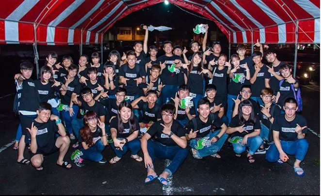

資訊工程系啦啦隊
這是我第一次接觸的活動。這個活動讓我認知原來團隊合作是一件多麼重要的事情，這次因為大家全心全意地投入與合作，因而有優異的表現。
這是當時的照片

這是我大二擔任吉祥物的影片
新生輔導員
這也是我以前沒有接觸過的事務，我的最主要工作，就是要讓所有的新生，可以在短暫的3天中，快速了解大學這個充滿活力和青春的地方，這也是我第一次真正帶領他人的活動。
六系聯合系烤總召
這個活動是我在大學系學會的最後一個活動，因為這個活動是需要一次帶領50～60人的活動，並且對象都是來自不同科系的同學，所以我們從原本的互不相識到慢慢磨和，再者由於我擔任的職位是總召，我也體會到原來要當一個決策管理者是一件很多麼不容易的事。
